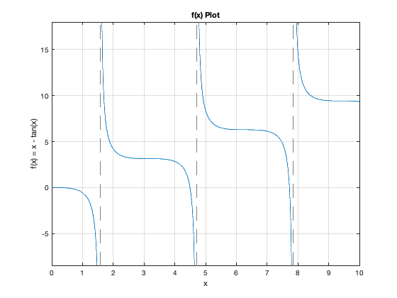

Contents
% Name : Kai Chuen Tan % Title : Homework 2 % Course : CSE 276C: Mathematics for Robotics % Professor : Dr. Henrik I. Christensen % Date : 17th October 2021 clear all; clc; fprintf('Name : Kai Chuen Tan\n') fprintf('Title : Homework 2\n') fprintf('Course : CSE 276C: Mathematics for Robotics\n') fprintf('Professor : Dr. Henrik I. Christensen\n') fprintf('Date : 17th October 2021\n\n') fprintf('--------------------------------------------------------\n\n')
Name : Kai Chuen Tan Title : Homework 2 Course : CSE 276C: Mathematics for Robotics Professor : Dr. Henrik I. Christensen Date : 17th October 2021 --------------------------------------------------------
--------------------------------------------------------
Problem 3 - Newton's Method
fprintf('Problem 3 - Newton''s Method \n') % Given an equation x = tan (x). Find two solutions % (upper and lower bounds) that are the nearest to x = 5. % x = tan(x) % 0 = x - tan(x) % f(x) = x - tan(x) % d(f(x))/dx = 1 - sec^2(x) % Exact of x x_exact = 5; % Define x_k x_k = (1:0.1:10); % Define function of x fx = @(x)x - tan(x); % Define the 1st derivative of function x dfx = @(x)1 - (sec(x))^2; % Error Tolerance, e error_tol = 1e-6; % Maximum Iteration to quit the function max_iter = 1000; % Plot the graph to guess the location of the roots. figure fplot(fx, [0, 10]); title('f(x) Plot') xlabel('x') ylabel('f(x) = x - tan(x)') grid on % Display two closest values. fprintf("\nThe two solutions that are nearest to 5 are the following:\n") % Call the Newton's Method to find two closet solutions [x_1, x_2] = Newtons_Method(x_exact, x_k, fx, dfx, max_iter, error_tol)
Problem 3 - Newton's Method
The two solutions that are nearest to 5 are the following:
x_1 =
4.4934
x_2 =
7.7253
